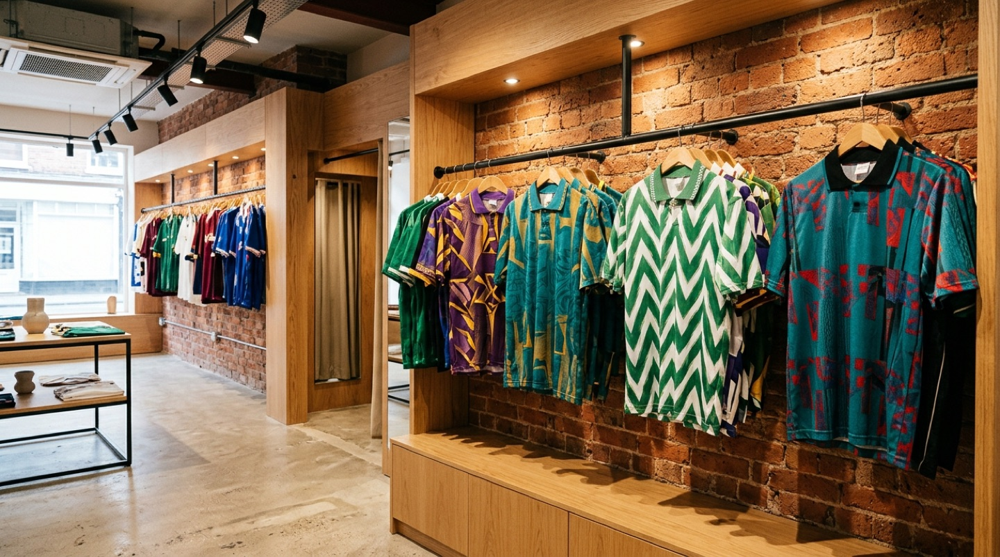

DANBY WYND TUNNEL DROP.

Illustrative imageTucked down cobbled 2 Danby Wynd off Yarm High Street. Swipe live one-off 1980s, 90s, 2000s and modern collector shirts by size, then place a Click & Collect counter hold to inspect stitch, collar tags and fit in person.
- Shop Address
- 2 Danby Wynd, Yarm TS15 9SF
- Opening Hours
- [Shop opening hours – owner to confirm]
- Direct Phone
- [Phone to confirm]
- UK Delivery
- [Postage options – owner to confirm]
- 2 DANBY WYND · YARM TS15 9SF
- AUTHENTIC 1-OF-1 RETRO & CLASSIC KITS
- CLICK & COLLECT COUNTER HOLD
- BUY · SELL · TRADE OVER THE COUNTER
- COBBLES OFF YARM HIGH STREET
- ZERO MONTHLY E-COMMERCE BLOAT
Filter by Era & Size, then swipe the rail
All 8 cards below are non-branded illustrative sample shirts ([Illustrative sample listing – owner stock to supply]) demonstrating instant filtering and Click & Collect holds.
1-Tap Owner Rail Status Toggle
When a 1-of-1 shirt is held or bought over the counter at 2 Danby Wynd, tap a status pill below — watch the Horizontal Drop Lookbook above update immediately.
 Illustrative image
Illustrative image
Sell, Trade or Hunt a Grail at 2 Danby Wynd
Clearing out an attic loft bundle of original 90s kits, or chasing a childhood shirt in your size? Inspect inner wash-codes, flock prints and woven collar tags face-to-face in Yarm.
[Grading policy – owner to confirm] · [Buy/trade process – owner to confirm]
Open 2 Danby Wynd in Google Maps ↗Send a Shirt Finder or Trade Note
Prefer to message before walking down Danby Wynd? Test the client-side enquiry ticket below: